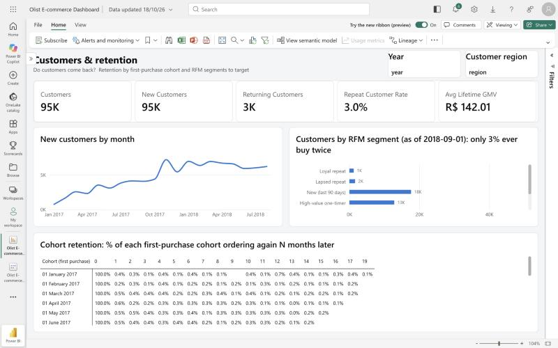
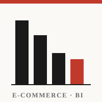

The Dashboard
Screenshots of the five report pages in Power BI.






A marketplace e-commerce business has one set of order data and five teams asking different questions of it. Leadership wants to know if the business is growing. Merchandising wants to know which categories carry revenue. Marketing wants to know if customers come back. Operations wants to know where deliveries run late, and the partner team wants to know which sellers matter most.
I built the dashboard an in-house analyst would hand those teams: one cleaned model, every KPI defined once, and one report page per stakeholder. The data is real: the Olist Brazilian E-Commerce Public Dataset, anonymised marketplace orders from January 2017 to August 2018. That is 20 full months, 97.9k orders, 111.8k items, 94.7k customers and 3,029 sellers, in Brazilian reais (R$).
Each report page answers one team’s questions. Every page has Year and Customer-region slicers.
| Page | Stakeholder | Questions it answers |
|---|---|---|
| 1. Executive overview | Leadership | How big is the business and is it growing? GMV, orders, AOV, customers, review score, on-time rate, trend, YoY. |
| 2. Sales & product | Category / merchandising | Which categories drive GMV (Pareto)? Price points, freight burden by product weight, payment mix. |
| 3. Customers & retention | Marketing / CRM | Do customers come back? New vs returning, cohort retention matrix, RFM segments to target. |
| 4. Delivery & operations | Ops / logistics | How fast do we deliver, where are we late, and what does lateness cost in reviews? |
| 5. Seller performance | Marketplace / partner team | How concentrated is GMV across sellers, and which big sellers deliver late or review poorly? |
Star schema in Python. A pandas pipeline cleans the 9 raw Olist tables into a 7-table star schema: three fact tables (orders, order items, payments) and four dimensions (customer, product, seller, date), with integer surrogate keys and foreign-key checks. Relationships are single-direction and many-to-one, so there are no ambiguous filter paths.
62 DAX measures, defined as code. Every KPI lives once in a single measures.dax file. A script turns it into the TMDL semantic model, so a definition like GMV, “late” or “repeat customer” means the same thing on every page and can be reviewed in a pull request.
Reconciliation. A second, independent pandas script computes the headline numbers without Power BI. The DAX results from the live model are checked against it, number by number.
Report as code. The report layout, titles and theme are generated as PBIR files and published with the Fabric REST API, so the whole dashboard can be rebuilt from the repository.
Refreshed from GitHub. The star-schema CSVs are published in the repository, and Power BI reads them over HTTPS from GitHub, so a refresh needs no gateway.
From 97.9k orders, January 2017 to August 2018.
The biggest finding: late delivery drives bad reviews. Orders that arrive on time average 4.29 stars. Every extra few days late costs more stars, down to 1.70 when an order is 8 or more days late.
| Delivery outcome | Avg review (stars) |
|---|---|
| On time | 4.29 |
| 1–3 days late | 3.29 |
| 4–7 days late | 2.10 |
| 8+ days late | 1.70 |
Source: Olist, “Brazilian E-Commerce Public Dataset by Olist”, Kaggle, CC BY-NC-SA 4.0. All figures are my calculations from that dataset; method and checks are in the GitHub repository.
These are my own analysis, based on the findings above.
I compared 30 DAX results from the live Power BI model with the independent pandas reference. All 30 match to 4 decimal places.
The check also caught a real bug. In DAX, BLANK = 0 evaluates to TRUE, so a measure filtering on is_late = 0 counted orders that were never delivered as “on time”. That dragged the on-time review score down to 4.21 stars.
Switching to strict equality (==) fixed it, and the on-time score matched pandas at 4.29 stars. Without the reconciliation, the dashboard would have shown a wrong number that looked perfectly plausible.
Screenshots of the five report pages in Power BI.
